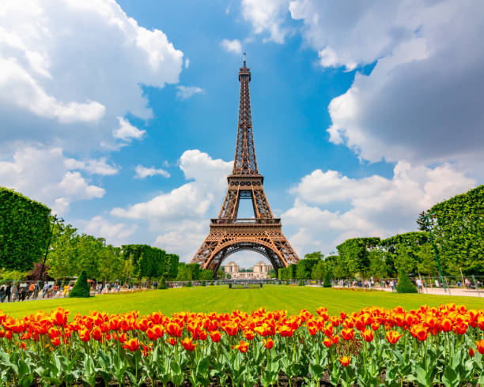

Viska Mia Sari (11210251000101)
5A Ilmu Perpustakaan
Menara Eiffel adalah struktur logam setinggi
324 meteryang terletak di kota Paris, Prancis. Bangunan ini dibangun oleh insinyur Perancis Gustave Eiffel pada tahun 1887 hingga 1889 sebagai bagian dari Pameran Dunia 1889 yang diadakan di Paris. Pembangunan ini awalnya mendapat banyak kritik dari masyarakat Prancis, namun Gustave berhasil meyakinkan pemerintah dan publik bahwa menara ini akan menjadi keajaiban teknik dan arsitektur yang luar biasa. Bangunan ini menjadi simbol modernitas dan kemajuan Prancis pada abad ke-19.Eiffel dibangun untuk memperingati 100 tahun Revolusi Prancis terjadi pada tahun 1789, serta untuk menunjukkan kemajuan teknologi dan arsitektur yang luar biasa, dan menjadi simbol modernitas dan kemajuan Prancis di mata dunia.
Selain itu, Gustave juga menyadari potensi Menara Eiffel sebagai sarana komunikasi radio, sehingga bangunan ini menjadi salah satu bangunan tertinggi dan paling terkenal di dunia hingga saat ini. Bangunan ini juga menjadi salah satu banggunan tertinggi dan paling terkenaldi dunia hingga saat ini.
info selengkapnya,klik di sini